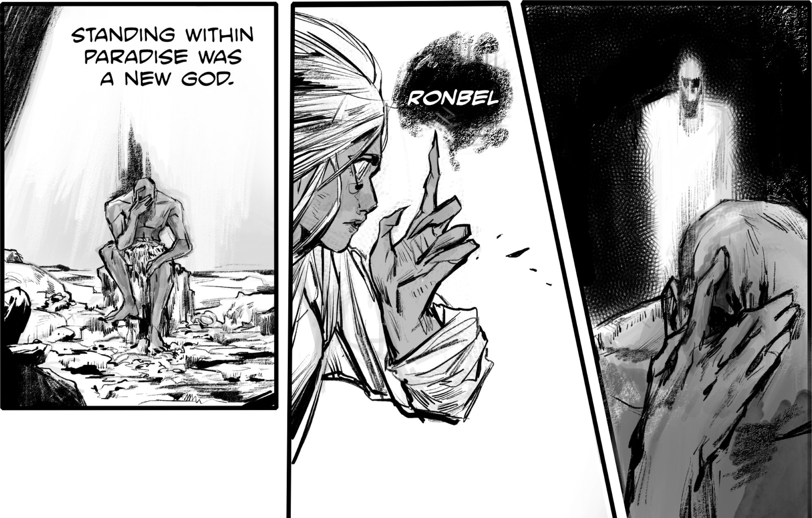
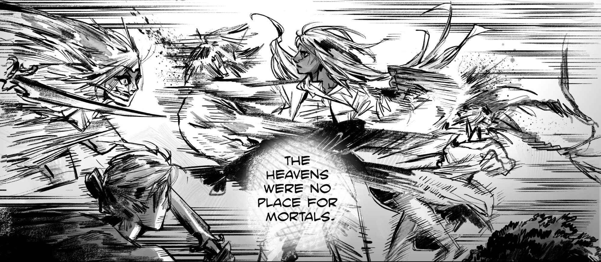
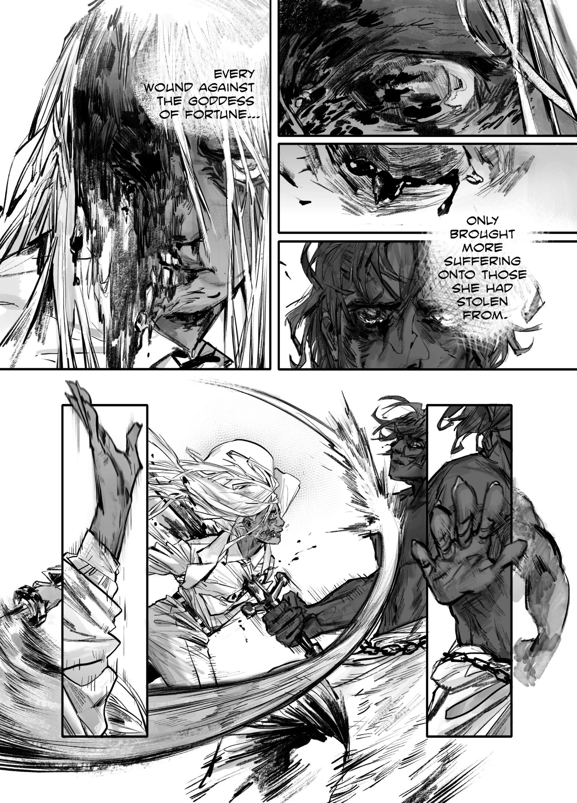

NO MAN IS
AN ISLAND
The Philosophy of Interdependence
A reference guide to the world of Ghara, The Heavens, and the lives caught between them.

The Philosophy of Interdependence
A reference guide to the world of Ghara, The Heavens, and the lives caught between them.
The Philosophy of Interdependence
The name No Islands comes from the simple idea that nobody is truly alone. We are all shaped by others, for better or for worse, seen or unseen. In Thief Of Fortune, a broken man's anger creates a god, that god's existence ruins humanity, and another man's sacrifice reshapes the balance of the world.
The story takes place on a world called Ghara — another planet, far elsewhere in the universe; Earth still exists, somewhere distant. Alongside the mortal world exists another dimension known as The Heavens, where gods reside. The connection between these two realms is physical and known — there are stairways scattered across Ghara that lead directly to The Heavens.
Anyone who climbs these stairs to the top becomes a god. This idea removes mystery from divinity and turns it into something dangerously accessible, creating a world where the boundary between human and god is thin, but deeply consequential.

A Soldier's Wrath, A Girl's Burden
"For all his family's riches, they could never buy back what the war had taken from him."
At the center of the story is The Parent, an old soldier returned from war, back to a world that has nothing left for him. One day, Badara appears, an urchin girl who has borne every kind of suffering a person can bear. The Parent adopts her, training and grooming her into the vessel of his revenge.
Eventually, The Parent's ritual begins. By way of his own suicide, he raises a freshly murdered Badara from death and into something beyond human. Badara attains sole possession of the entirety of humanity's fortune, robbing it of the same thing The Parent had lost so long ago. She takes her newfound strength to The Stairway and ascends into The Heavens. She emerges as Ronbel, Goddess of Fortune.
Her ascension is no accident — it is exactly what The Parent intended. Prosperity fades, suffering spreads, and the world of Ghara collapses into despair. But Ronbel could care less for what her father wanted; she sought no revenge. The girl once called Badara was free of pain, and nothing else mattered.

Deliro Monasque and the Heavenly Order
The highborn, those of mixed breed, are not deprived of their fortune at birth. Among these beings is a prince, Deliro Monasque, born to a Kruhind monarch and a human noble.
In an ultimate act of selflessness, Deliro forsakes his own fortune to elevate humanity and reestablish balance for his people, becoming intrinsically linked with the entirety of humanity's suffering in the process — always aware of it, always feeling the pains of others. While Ronbel retains what was stolen from humanity, Deliro's own fortune makes for a fine substitute.
Within The Heavens, watching over mortalkind, is a group of gods known as The Third Pantheon. These beings embody certain concepts, drawing strength from the presence of the one they are associated with. The pantheon is led by their Lord, the god nominally considered to be the most powerful. Currently, the Third Pantheon's Lord is Meyol.
The gods have redefined themselves, from their names to their duties. Many are selfish or careless. Most of The Third Pantheon spend their immortal lives enjoying endless festivities, mostly leaving the mortals who begrudgingly revere them alone.

"A layered universe where the boundary between human and god is a physical path."
No Islands is set in a universe divided between two connected realms — the mortal world called Ghara and a higher realm known as The Heavens. Ghara is another planet, far elsewhere in the universe, where humans live, struggle, and survive. However, this world contains a unique element: physical stairways that lead directly to The Heavens. These stairways are known to people, and anyone who climbs them completely becomes a god. The Heavens, on the other hand, are inhabited by gods who appear into existence rather than being born.

The story begins with the people of Ghara, whose lives are shaped by suffering and circumstance. At the center is a broken soldier known as The Parent, who returns from war to a life that feels empty and meaningless. Driven by blind anger toward the world, he takes in an orphan girl named Badara, who has already experienced deep suffering. Instead of saving her, he shapes her into a tool for revenge. Through a ritual that costs him his own life, he transforms her into something beyond human. In contrast, Deliro Monasque represents a different path. Born half-human and half-Kruhind, he chooses empathy over anger. When the world begins to collapse, he sacrifices himself to carry the suffering of all humanity. His daughter Angel survives and becomes a witness to these events, representing the continuation of the story and the future of Ghara.
The Heavens are ruled by powerful but flawed gods who do not fully understand the consequences of their actions. At the top is Elha, the current Lord, who enforces control and rejects the idea of humans becoming gods. Alongside him is Pondrerer, the first Lord, who now observes rather than interferes, and Meyol, a former Lord who once welcomed change but is no longer present. Other gods, like Bail Ha, hold great power but avoid leadership. Unlike traditional divine beings, these gods are unpredictable and often careless, treating their power casually. Their detachment from suffering makes them dangerous, as their decisions directly impact the mortal world without them experiencing its consequences.

The Kruhind. Banished to Ghara after a great war against the gods, they enjoy a deeply uneasy peace with humanity, and are regarded fearfully by many cultures — sometimes called "demons". Their immunity to Ronbel's acquisition of fortune gave them the perfect opportunity to dominate and establish total control over the ailing masses of mankind.
The world of No Islands is governed by two opposing forces — fortune and suffering. When Badara ascends to The Heavens and becomes Ronbel, the Goddess of Fortune, she begins absorbing the fortune of all humanity. This causes the mortal world to fall into despair. In response, Deliro takes on all suffering, becoming the God of Suffering and restoring balance. However, this balance is not natural. Both forces are controlled by individuals rather than existing freely, making the system unstable. As long as fortune and suffering remain in the hands of gods, humanity's fate is never truly its own.
Held by Ronbel. Drained from humanity, hoarded in The Heavens.
Carried by Deliro. Absorbed in silence, restoring a fragile balance.
At the heart of the story is the clash between Ronbel and Deliro. Ronbel seeks freedom from pain and chooses to live without suffering, even if it harms the world. Deliro, on the other hand, accepts suffering and carries it for others. Their conflict is not just physical, but philosophical. It raises a deeper question — should humanity depend on gods to control its fate, or should it find balance on its own? This tension drives the story forward and determines whether the world can ever truly be stable.

Beyond Ghara and The Heavens exists a larger universe filled with other beings and forces. Among these is an entity known as The Chalice, a seemingly omnipotent being that exists within the body of The Husband. The Husband dwells far from Ghara, spending most of his time asleep while his guardian, Uriel, tends their garden.
No Islands is a dark and philosophical story that explores pain, sacrifice, and connection. It moves between large-scale cosmic events and deeply personal human struggles. There are no clear heroes or villains — only individuals shaped by their experiences and choices. Every action has consequences, and every act of power affects others. At its core, the story reminds us that no one stands alone. Every life is connected, and every decision creates ripples that shape the world.
The People Who Bear the Consequences
THE PARENT // THE SULLEN SOLDIER
The Parent, despite what his title may suggest, is quite young, having been sent to war to "honor" his elite family name with his service. Whatever he experienced during his tour, it left him a shell, abjectly miserable. No amount of fame in the upper strata of society, or material pleasures, could relight the fire inside.
While walking to the cliff where he would eventually make his sacrifice, The Parent encountered Badara, asleep on the outskirts of his family estate. His name, whatever it was, has long been forgotten by Ronbel.
BADARA // THE PRODUCT OF GHARA'S CRUELTY
The Product of Ghara's Cruelty
Badara was gutter-trash from the moment her mother expelled her into the world. How she managed to survive over two decades, even she could not say. The girl had endured every kind of pain a living creature can, yet she persisted. By the time she met The Parent, she had been discharged from a company of penal conscripts after falling pregnant; although what became of her child, Badara cannot say.
Maybe The Parent felt a kinship with Badara, two soldiers whom the world had been merciless to. From that day forward, Badara began living under The Parent's care, being trained for something that necessitated her survival. It didn't matter to Badara, of course. That she got to see another day was enough.
HIERARCHY LEVEL: 03 // THE PEAK POWER
The Savior of Humanity
Deliro is the Highborn prince whose only dreams are the nightmares of others. During his young life, Deliro is quickly made conscious of the state of humanity, feeling a deep empathy for their plight. Although he is fortunate and blessed beyond imagining, he says "No". At the age of eleven, Deliro makes the choice and relinquishes his Kruhind-bestowed gift, bringing hope, prosperity and fortune back to Ghara's people.
He shoulders the burden of his choice, a choice that cost more lives than just his own. By the time he prepares to ascend The Stairway, his only remaining family is his daughter, Angel. Upon his ascension, Deliro is given a new name, Walderelt, God of Suffering. But no — his name, the name of humanity's hero, is Deliro. Now and forever.
HIERARCHY LEVEL: 04 // THE WITNESS
The Sole-Surviving Tyrant to Be
Angel was and is the only inexplicably still-living child of Deliro Monasque, the savior of humanity. Angel, more than anyone else, adores her father; her failure to emulate his legacy is a deliciously cruel irony indeed. Unlike Deliro, anything resembling a noble bearing is absent from Angel's being; doubtless that she takes after her mother.
They are, these characters, but some of the players that dance between the stages of Ghara and The Heavens. There is music within oceans of spilt blood, and there are moving soliloquies that emerge only from burnt out, breathless howls of agony.
This performance is what Thief Of Fortune is the primer for, whetting the appetite before the feast.
We invite you to sit in for the multi-act disaster that is to come. To watch as these pitiable gods and mortals, whose very existence both knowingly and unknowingly touch the lives of each other, melt for The Author's entertainment.
It is what they exist for, don't you know?
NO ISLANDS // ISSUE 01
This world guide is just the beginning. Read the full story.
Buy Issue 01